לכל דמות אופי ותנועה אחת של 2 שניות. אין שני אופיים זהים ואין שתי תנועות דומות: כל תנועה בחלק גוף אחר או בקצב אחר, ותנועה גדולה שרואים גם בכפתור קטן. האופי לא נובע ממין, מצבע עור, ממשקפיים או מבגדים. בלי שיניים, בלי עיוותים, בלי לעג ובלי פחד. כל תנועה נגמרת בתמונה הקבועה.
החלטה שלך
אפשרות 1 (מומלצת) לכל 30: ראש וכתפיים כמו היום. בערך 87 קרדיטים, עד 105 עם צילומים חוזרים
תנועות של כל הגוף העליון (סיבוב, קפיצה, התכווצות, משיכת כתפיים). התמונות שאישרת נשארות. הרוטן: מרים כתפיים ומסובב ראש ב"המף!", בלי ידיים.
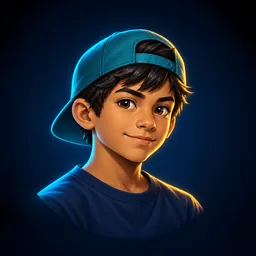
רוטן אבל טובמרים כתפיים, מסובב את הראש הצידה ב"המף!", וחוזר עם חיוך קטן
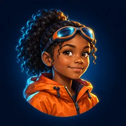
ספורטיביתריצה במקום, מהירה
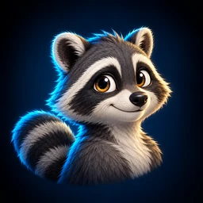
ערמומיחומק הצידה מהתמונה וקופץ חזרה
ניסיון קטן לאפשרות 2: גוף עד המותניים עם ידיים, רק ל-3 דמויות. עד 15 קרדיטים
3 תמונות חדשות ו-3 אנימציות, כדי לראות אם ידיים (שילוב ידיים, אגרוף, "ששש") יוצאות טוב, לפני כל החלטה על כל ה-30.
גוף עד המותניים, הידיים בתמונה
רוטן אבל טובמשלב ידיים, מרים גבה ומסובב ראש, ואז נשבר לחיוך
גוף עד המותניים, הידיים בתמונה
ספורטיביתאגרוף לאוויר בשמחה
גוף עד המותניים, הידיים בתמונה
ערמומיכף על הפה: "ששש"
8 הילדים (פתוחים מההתחלה)
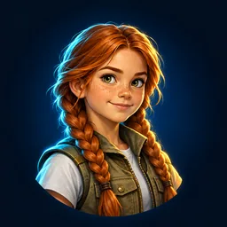
מנהיגהמזדקפת לאט לגובה מלא, מוכנה להובילרוטן אבל טובמרים כתפיים, מסובב את הראש הצידה ב"המף!", וחוזר עם חיוך קטן
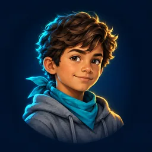
עליזמסתובב סיבוב שלם וחוזר אלינו
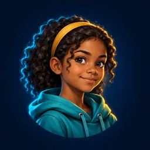
סקרניתנשענת קדימה אל המסך בעיניים גדולות
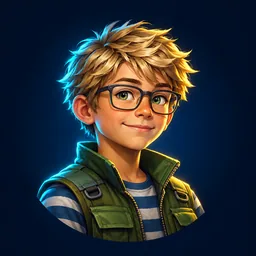
ליצןמשיכת כתפיים גדולה ושובבה
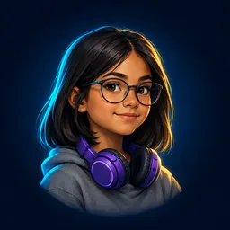
אוהבת מוזיקהרוקדת: פלג הגוף העליון מסתובב במעגל לקצב
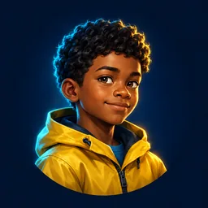
חולמנימתנדנד לאט קדימה ואחורה כמו על נדנדהספורטיביתריצה במקום, מהירה
12 הדמויות שנפתחות
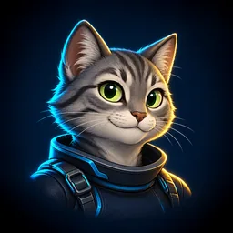
גאהמרים את האף למעלה באיטיות
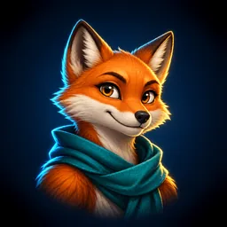
שובבקורץ בחיוך ערמומינשאר כמו שהוא
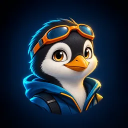
מגושם ושמחמתנדנד מצד לצד
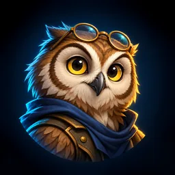
מהורהרמסובב את הראש רחוק הצידה וחזרה
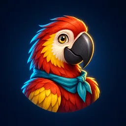
שוויצרמנפח את כל הנוצות ואז מחליק אותן
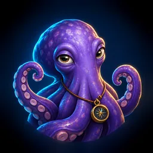
שובבהזרוע אחת מתעגלת למעלה ומתופפת על הראש
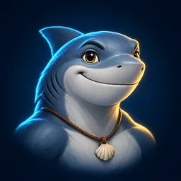
לחוץ וחביברעד מהיר של כל הגוף, ואז חיוך של הקלה
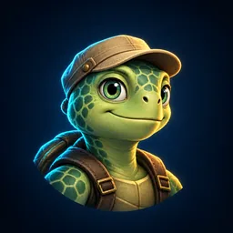
רגועמכניס את הראש לשריון ומוציא שוב
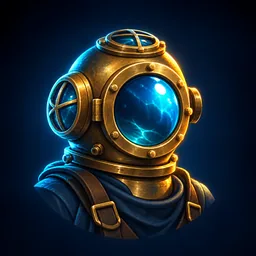
הרפתקןבועות עולות מהחלון של הקסדה
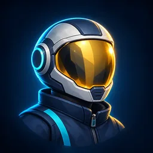
בטוח בעצמוברק עובר על המגן הזהוב
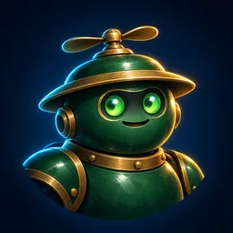
קלילהמדחף על הכובע מסתובב והוא מתרומם קצת באוויר
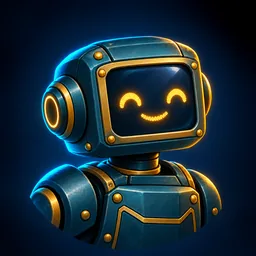
נלהבהפרצוף במסך מתחלף לכוכבים ושוב לחיוך
10 הדמויות החדשות
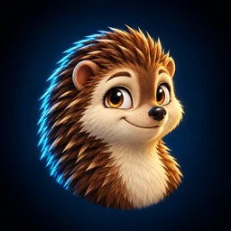
ביישןמתכווץ מהר למטה ומציץ חזרה לאט
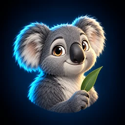
ישנוניהעיניים נעצמות והגוף צונח לאט, ואז מתעורר בבהלה קטנהערמומיחומק הצידה מהתמונה וקופץ חזרה
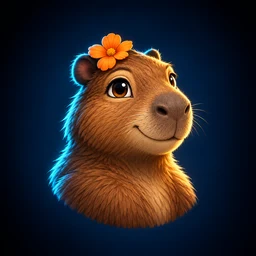
שלווההפרח על הראש נפתח לאט ונסגר
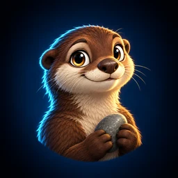
זריזהזורקת את האבן למעלה ותופסת
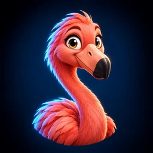
אלגנטיתמכופפת את הצוואר הארוך בקידה חיננית ומתרוממת